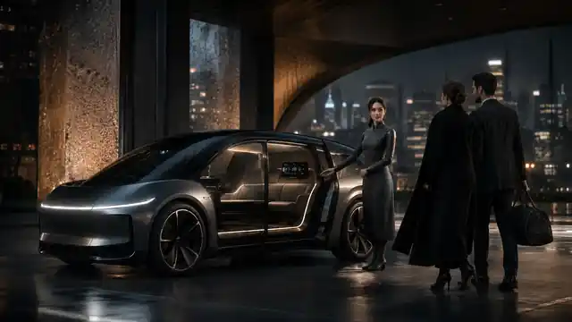

Executive Mode
Desk, privacy, conferencing, route-aware calendar and a continuously prepared workspace.
A premium autonomous living vehicle with a near-human embodied copilot that can drive, cook, clean, prepare the cabin, host guests and keep your life moving while you work, rest or travel.

ATLAS opens, loads, welcomes and resets the cabin.
Desk, privacy, conferencing, route-aware calendar and a continuously prepared workspace.
Guest welcome, beverage and serving workflows, climate, lighting, music and event-ready presentation.
Transformable seating, sleep environment, luggage management and destination-aware wake-up.
Tidying, sanitation assistance, inventory sensing and maintenance diagnostics between journeys.
We borrow public technical patterns, not proprietary technology.
Vision, world modeling, planning, efficient inference and fleet-learning patterns inspired by modern autonomy systems.
Reference: Tesla public AI & Robotics materialsRobot-agnostic abstraction and human-first interaction so the copilot feels obvious instead of requiring robotics expertise.
Reference: Enigma public technology materialsVision-language-action reasoning, simulation and manipulation data for kitchen, cleaning and cabin tasks.
Reference: Genesis AI public GENE materialsConstrained real-world tasks, human fallback and continuous improvement before attempting unrestricted autonomy.
Reference: Walden Robotics public deployment philosophyTransforming seats, work surfaces, lighting, audio, privacy, climate, inventory and cabin orchestration on a partner vehicle platform.
Start with loading, serving, tidying, folding, object retrieval and cabin preparation—with remote human fallback.
Executive mobility, hotels, resorts, luxury travel, events and long-distance premium fleet partners.
Investor submissions are non-binding indications of interest. The public counter includes only commitments manually verified by the company. No fake investors, no fabricated totals.